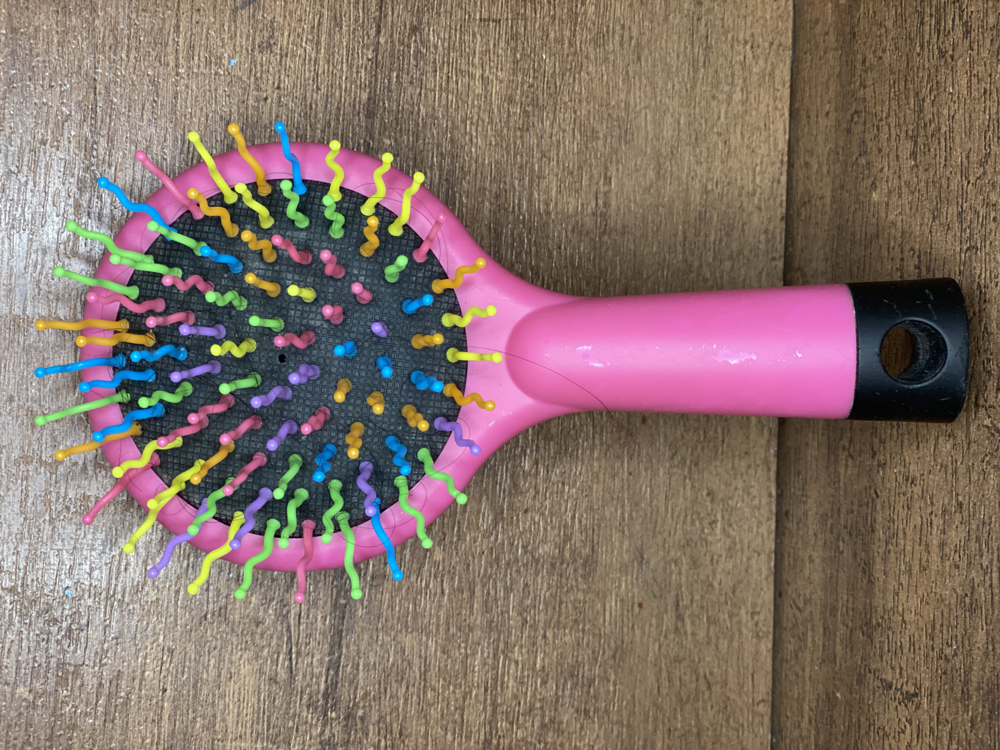
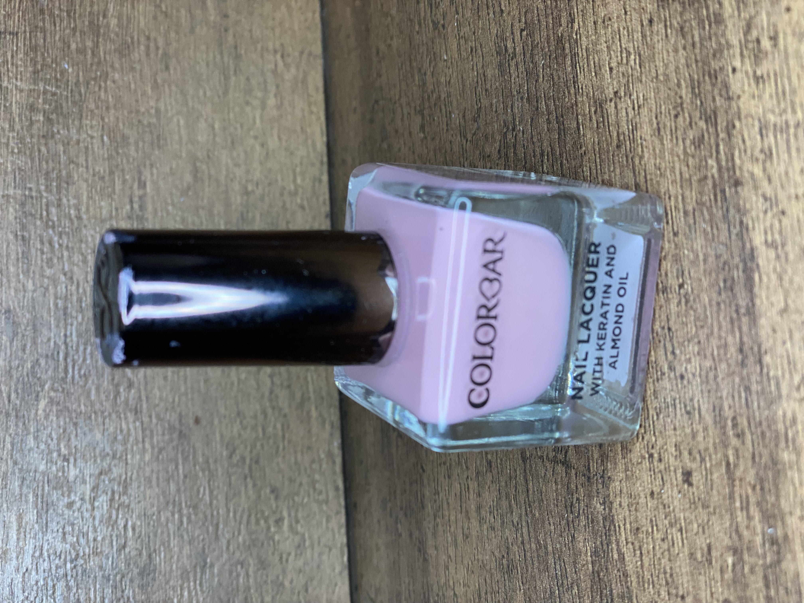
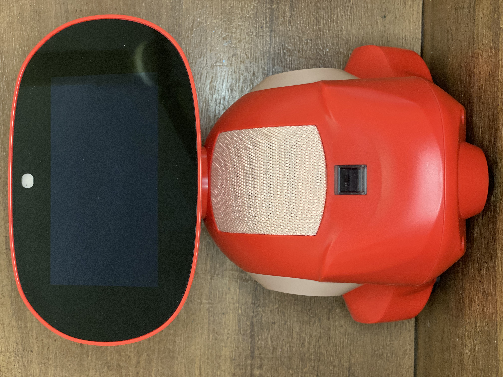
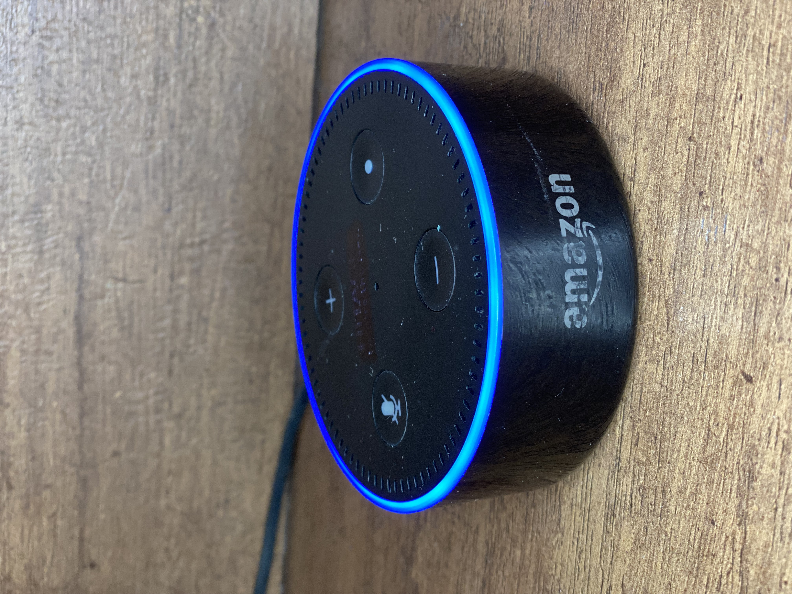

Case Study
1. Test Image-

Output on Google Lens - Detangling Hair Brush Rainbow Volume
Output on MobileNet - Maraca
Result:
Google Lens is more accurate
2. Test Image-

Output on Google Lens - Color Bar Nail Laquer
Output on MobileNet - Mail Bag
Result:
Google Lens is more accurate.
3. Test Image-
Output on Google Lens - LOL Figure 8 Doll
Output on MobileNet - Traffic Light
Result:
Google Lens is more accurate
4. Test Image-

Output on Google Lens - Miko-3
Output on MobileNet - Expresso Maker
Result:
Google Lens is more accurate
5. Test Image -

Output on Google Lens - Amazon Echo Dot
Output on MobileNet - iPod
Result:
Google Lens is more accurate
CONCLUSION: I have observed that Google Lens is more accurate